Managing Articles
To manage articles, you will need to use the article manager. To access the article manager,
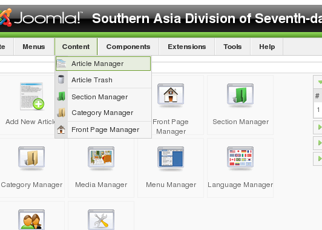
From the article manager, you can add, edit, publish, unpublish, delete, and perform many other operations on the articles on the website.
The articles are organized into categories and then the categories comprise sections. For example, the Southern Asia Division News articles are in the “Division News” category which is found in the “News” section. The Barn articles are found in the “Barn” category of the “Articles” section. The articles in the “Division News” category are the ones that show up when you click on the “Division News” item in the main menu on the website. Similarly, the Barn articles are shown when you click on the “Barn” item in the main menu.
Adding New Articles
- From the article manager, click on the “New” button in the upper right hand corner.
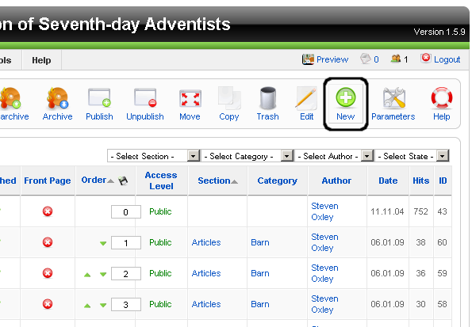
- Once on the new article page, fill in the title, section, category, published, and front page information (it is not necessary to fill in the alias since it will be completed automatically).
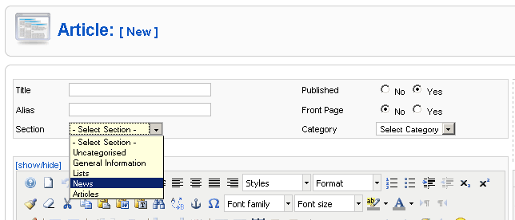
- If you are creating an article for Barn, then select “Articles” from the “Section” drop-down menu. If you are creating an article for the Southern Asia Division News, then select “News” from the “Section” drop-down menu. Either way, the correct category should automatically be selected in the “Category” drop-down menu.
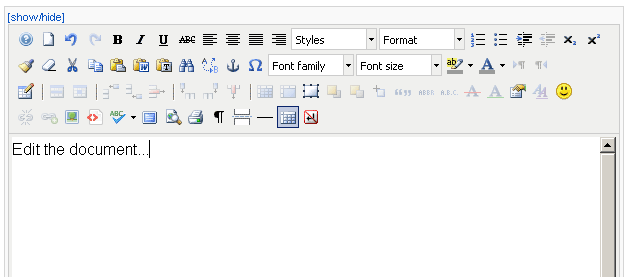
- If you want the article to show up on the front page of the website then select “Yes” for the “Front Page” selection.
- If you are creating a new article, you probably will want it to show up on the website so leave “Yes” selected for the “Published” selection.
- Next you are ready to edit your article using the article text editor.
- You can type in the content of your article here or you can edit the article in a separate program (such as Microsoft Word), copy the content of that document, and paste it here.
- There are other parameters and options that you could set, but the only thing that remains which will need to be filled out is the Metadata information. This is important because it factors into how the article will show up in search results. To fill in the metadata, select “Metadata information” from the menu panes on the right side of the page.
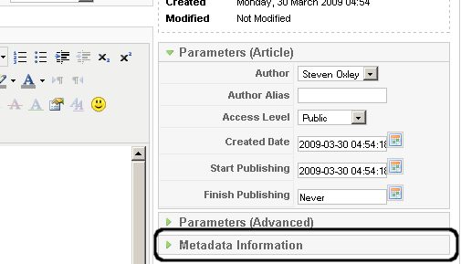
- The metadata pane should slide down so that you can enter the Description and Keywords. You can fill in the Author if you feel so inclined and the Robots field if you know what you are doing.
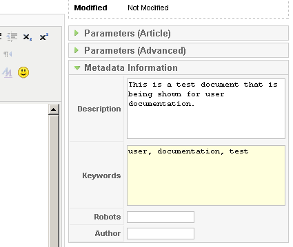
- The Description field should just include a short description of the article (I find the first paragraph of an article usually works quite well). The keywords field should include keywords from the article separated by commas. For example, if an article was about how dairy cows in Nepal were not producing as much milk, the keywords you entered might be, “Nepal, dairy, cows, decline, milk, production.”
- All that remains now is to save the article.
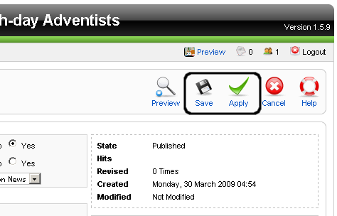
- If you wish to save your changes and stay on the same page, then click “Apply.” If you wish to save your changes and return to the main Article Manager page, then click “Save.”
Adding Pictures to an Article
- If you wish to have a picture embedded in your article you will need to use the editor on the edit article page to do so.
- First, click on the “Insert/Edit Image” button.
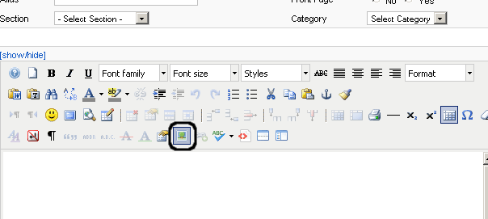
- Then you should get the following dialog screen from which you should select “Upload.”
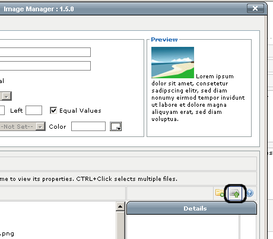
- From the “Upload” dialog box, select “Add” and locate the picture you wish to upload from on your hard drive. Select the picture and click “Open.”
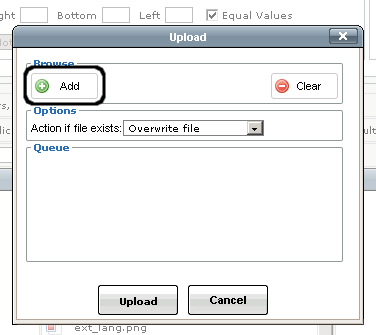
- Once you have selected the pictures you want to upload, click on the “Upload” button.
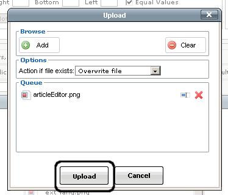
- Once you see a green check-mark next to the file, click on “Cancel” to exit the dialog.
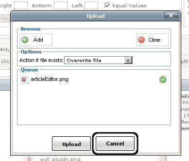
- The next step is to select the picture from the list of pictures in the middle of the “Image Manager.” Even if it seems to already be selected, make sure to click on it and check that the “Properties” at the top of the image manager get filled in with the default values.
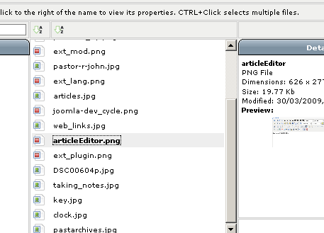
- Now it is time to fill in the properties with the values that you want. The URL should be filled in automatically, so you do not need to worry about that, but there are a couple of things here you will want to change. First of all, set the “Alternate Text” field to something that describes the picture. This alternate text will be what people see if they do not download the image (for whatever reason) or what blind people will hear if they access the site with a screen reader. If the image is simply decoration and the picture doesn’t really add any meaning, leave the “Alternate Text” field blank.
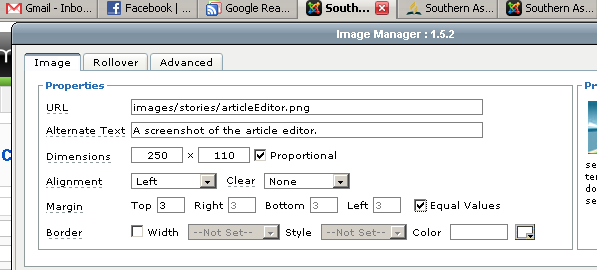
- Next, set the “Dimensions” of the picture to something reasonable. The default dimensions are probably too big. A good thing to do here would be to leave “Proportional” checked (so that the original width to height ratio is preserved) and set the first box to something between 200 and 250 pixels. That is generally a good size for an image in an article.
- Finally, you will probably want to set the “Alignment” of the image to either “Left” or “Right” so that the text of the article will flow around the image. You may also want to set a small “Margin” for the edges of the picture so that the text does not get too close.
- Now all that you have to do is click “Insert” and the picture will be inserted into your article. If you want to make any changes to it later, simply select the picture and click on the “Insert/Edit Picture” button again.
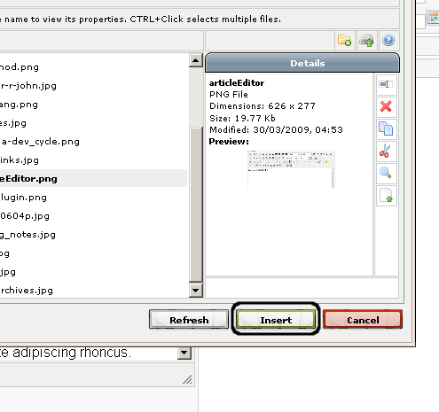
Managing Front Page Articles
- After you’ve added an article, if you chose to put it on the front page, you will find that the new article will appear before the “Welcome” article on the front page of the web site. This is undesirable and we are going to change it. First of all, select “Front Page Manager” in the “Content” drop-down menu.
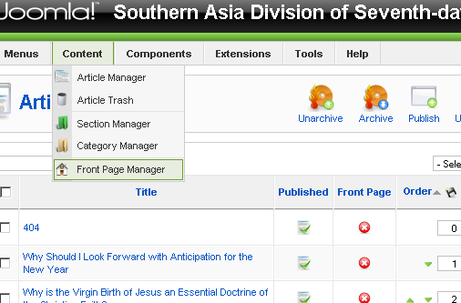
- From the front page manager there are several things that you can do, including changing the order that articles appear on the front page, removing articles from the front page, and even changing their published status. We will just focus on changing the ordering of articles on the front page and removing articles from the front page entirely.
Ordering Articles on the Front Page
- Changing the ordering on the front page is incredibly easy. Just click on the green arrows next to the article you wish to move to change its order.
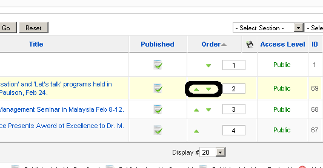
Removing Articles from the Front Page
- Removing Articles from the front page is quite easy, too. First, select the articles that you wish to removed by checking the boxes next to them.
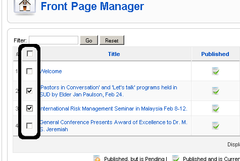
- All you have to do now is click on the “Remove” button in the upper right hand corner of the page.
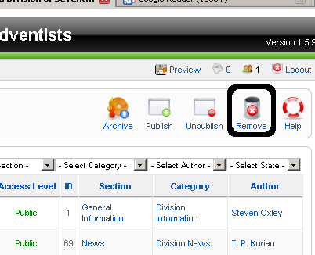